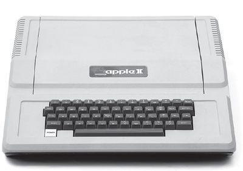

As Jobs walked the floor of the Personal Computer Festival, he came to the realization that Paul Terrell of the Byte Shop had been right: Personal computers should come in a complete package. The next Apple, he decided, needed to have a great case and a built-in keyboard, and be integrated end to end, from the power supply to the software. “My vision was to create the first fully packaged computer,” he recalled. “We were no longer aiming for the handful of hobbyists who liked to assemble their own computers, who knew how to buy transformers and keyboards. For every one of them there were a thousand people who would want the machine to be ready to run.”
乔布斯在个人电脑节的展厅考察了一番后，意识到ByteShop的保罗·特雷尔说对了：个人电脑应该以整套设备的形式呈现给消费者。他决定，下一代的苹果电脑需要自带一个漂亮的箱子和内置键盘，整合其他关键元素，从电源到软件到显示器。“我的想法是制造第一台整合所有部件的电脑，”他回忆道，“我们的目标客户不再是少数喜欢自己组装电脑、知道如何购买变压器和键盘的业余爱好者。希望电脑拿到手就可以运行的人，其数量是业余爱好者的1000倍。”
In their hotel room on that Labor Day weekend of 1976, Wozniak tinkered with the prototype of the new machine, to be named the Apple II, that Jobs hoped would take them to this next level. They brought the prototype out only once, late at night, to test it on the color projection television in one of the conference rooms. Wozniak had come up with an ingenious way to goose the machine’s chips into creating color, and he wanted to see if it would work on the type of television that uses a projector to display on a movie-like screen. “I figured a projector might have a different color circuitry that would choke on my color method,” he recalled. “So I hooked up the Apple II to this projector and it worked perfectly.” As he typed on his keyboard, colorful lines and swirls burst on the screen across the room. The only outsider who saw this first Apple II was the hotel’s technician. He said he had looked at all the machines, and this was the one he would be buying.
1976年的那个劳工节周末，在他们的酒店房间里，沃兹尼亚克在完善新一代机器的样机——也就是后来的AppleII，乔布斯希望这台机器能将他们的事业带上一个新的台阶。这台机器只被他们带出过房间一回，是在某一天的深夜，他们将它带到了一间会议室，连接上彩色投影电视进行测试。沃兹尼亚克有一个绝妙的想法，可以让机器芯片运行出色彩，他想要看看这种方法在一台使用投影仪显示图像的电视机上能否起作用。“我想，投影仪使用的色彩电路不同，和我的色彩生成方法一起工作的时候可能会发生错误，”他回忆道，“所以我就把AppleII连接到了这台投影仪上，结果运行非常完美。”他在键盘上一番敲击之后，彩色的线条和螺旋图案就在屏幕上出现了。唯一一个见到AppleII的局外人是酒店的技术员。他说他见过所有的机器，但这一台才是他愿意购买的。
To produce the fully packaged Apple II would require significant capital, so they considered selling the rights to a larger company. Jobs went to Al Alcorn and asked for the chance to pitch it to Atari’s management. He set up a meeting with the company’s president, Joe Keenan, who was a lot more conservative than Alcorn and Bushnell. “Steve goes in to pitch him, but Joe couldn’t stand him,” Alcorn recalled. “He didn’t appreciate Steve’s hygiene.” Jobs was barefoot, and at one point put his feet up on a desk. “Not only are we not going to buy this thing,” Keenan shouted, “but get your feet off my desk!” Alcorn recalled thinking, “Oh, well. There goes that possibility.”
要生产整套的AppleII需要大量的资金投入，于是他们考虑将股权出售给更大的公司。乔布斯去找了阿尔·奥尔康，希望能得到机会向雅达利的管理层进行推销。奥尔康安排他与公司的总裁乔·基南（JoeKeenan）会面，此人相比奥尔康和布什内尔要保守许多。“史蒂夫进去向他推销，但是乔根本无法忍受他，”奥尔康回忆说，“史蒂夫的个人卫生状况让他很不满。”当时乔布斯光着脚，还一度把脚搁到了桌子上。“我们不光不会买你的东西，”基南吼道，“还要请你把脚放下来！”奥尔康回忆自己当时的想法：“完了，没戏了。”
In September Chuck Peddle of the Commodore computer company came by the Jobs house to get a demo. “We’d opened Steve’s garage to the sunlight, and he came in wearing a suit and a cowboy hat,” Wozniak recalled. Peddle loved the Apple II, and he arranged a presentation for his top brass a few weeks later at Commodore headquarters. “You might want to buy us for a few hundred thousand dollars,” Jobs said when they got there. Wozniak was stunned by this “ridiculous” suggestion, but Jobs persisted. The Commodore honchos called a few days later to say they had decided it would be cheaper to build their own machine. Jobs was not upset. He had checked out Commodore and decided that its leadership was “sleazy.” Wozniak did not rue the lost money, but his engineering sensibilities were offended when the company came out with the Commodore PET nine months later. “It kind of sickened me. They made a real crappy product by doing it so quick. They could have had Apple.”
9月，康懋达电脑公司（CommodoreComputer）的查克·佩德尔（OiuckPeddle）来到乔布斯家中观看他的演示。“我们打开了史蒂夫家的车库门，让阳光照射进来，查克走了进来，穿着西装，戴着牛仔帽。”沃兹回忆道。佩德尔非常喜欢AppleII，他于数周后在公司总部为高层人员安排了一场演示。“你也许有兴趣花几十万买下我们公司。”乔布斯到那儿后说了这样一句话。沃兹尼亚克记得当时自己被这个“荒唐的”建议惊得目瞪口呆，但乔布斯坚持要这么做。几天之后，康懋达公司打来电话说，他们认为研发自己的电脑更加省钱。乔布斯并不沮丧，他全面考察了康懋达公司后，认为该公司的管理层太“卑劣”了。沃兹尼亚克对于失去了这笔投资并不感到遗憾，但是当9个月后，该公司推出了他们自己的电脑“CommodorePET”的时候，他作为一名工程师，在感情上受到了极大的伤害。“那玩意儿让我觉得恶心，”他说，“他们太急于求成了，所以做出这么一个蹩脚的产品。他们本来可以拥有苹果的。”
The Commodore flirtation brought to the surface a potential conflict between Jobs and Wozniak: Were they truly equal in what they contributed to Apple and what they should get out of it? Jerry Wozniak, who exalted the value of engineers over mere entrepreneurs and marketers, thought most of the money should be going to his son. He confronted Jobs personally when he came by the Wozniak house. “You don’t deserve shit,” he told Jobs. “You haven’t produced anything.” Jobs began to cry, which was not unusual. He had never been, and would never be, adept at containing his emotions. He told Steve Wozniak that he was willing to call off the partnership. “If we’re not fifty-fifty,” he said to his friend, “you can have the whole thing.” Wozniak, however, understood better than his father the symbiosis they had. If it had not been for Jobs, he might still be handing out schematics of his boards for free at the back of Homebrew meetings. It was Jobs who had turned his ingenious designs into a budding business, just as he had with the Blue Box. He agreed they should remain partners.
对康懋达公司的这次出售未果也让一直暗藏在乔布斯与沃兹尼亚克间的冲突浮出水面：他们对苹果公司的贡献真的一样多吗？他们之间的利益又该如何分配？杰里·沃兹尼亚克一直都认为工程师的价值要远超过企业家和营销人员，他觉得大多数钱都应该归他儿子所有。乔布斯来家里作客时，杰里当面向他提出了自己的不满。“你不配得到这么多他告诉乔布斯，“你没有做出过任何产品。”乔布斯哭了起来，这在他身上是很常见的事情。他一直都不擅长控制自己的情绪——以后也不会擅长。乔布斯告诉沃兹尼亚克，愿意停止他们的合作关系。“如果我们不能对半分账的话，”他对自己的朋友说，“你可以全部收为己有。”然而，沃兹尼亚克比自己的父亲更加了解自己与乔布斯之间的共生关系。如果不是乔布斯的话，他可能还在家酿计算机俱乐部的会议上免费发放自己设计的电路板的原理图，是乔布斯将他的技术工程天赋转化成了蓬勃发展的生意，正如当年的蓝盒子一样。他同意继续保持合作关系。
It was a smart call. To make the Apple II successful required more than just Wozniak’s awesome circuit design. It would need to be packaged into a fully integrated consumer product, and that was Jobs’s role.
这是个明智的决定。要想让AppleII取得成功，需要的不仅仅是沃兹尼亚克杰出的电路设计能力。AppleII需要成为一台完整的全功能消费产品，这就需要乔布斯施展拳脚了。
He began by asking their erstwhile partner Ron Wayne to design a case. “I assumed they had no money, so I did one that didn’t require any tooling and could be fabricated in a standard metal shop,” he said. His design called for a Plexiglas cover attached by metal straps and a rolltop door that slid down over the keyboard.
他第一步便是请以前的合伙人罗恩·韦恩设计一个箱子。“我想他们没什么钱，于是我就做了一款不需要使用工具加工的箱子，普通的五金商店就能制造出来。”他说。他的设计结果出来了：一个有机玻璃制成的壳子，附带有金属条以及一扇可以盖住键盘的卷门。
Jobs didn’t like it. He wanted a simple and elegant design, which he hoped would set Apple apart from the other machines, with their clunky gray metal cases. While haunting the appliance aisles at Macy’s, he was struck by the Cuisinart food processors and decided that he wanted a sleek case made of light molded plastic. At a Homebrew meeting, he offered a local consultant, Jerry Manock, $1,500 to produce such a design. Manock, dubious about Jobs’s appearance, asked for the money up front. Jobs refused, but Manock took the job anyway. Within weeks he had produced a simple foam-molded plastic case that was uncluttered and exuded friendliness. Jobs was thrilled.
乔布斯并不喜欢这个箱子。他想要的是筒单又精致的设计，可以让苹果电脑从那些配有笨重的灰色金属箱的电脑中脱颖而出。有一次他在梅西百货的家用电器通道闲逛时，厨艺公司（Cuisinart）的食品加工机触发了他的灵感，他决定要一个光滑的机箱，由轻便的模制塑料制成。在一次家酿计算机俱乐部的会议上，他出价1500美元，请一名当地的技术顾问杰里·马诺克（JerryManock）将这个设计制造出来。乔布斯的着装形象让马诺克有些半信半疑，他要求乔布斯预支报酬。乔布斯拒绝了，但马诺克还是接受了这份工作。几个星期后，他就做出了一个简单的发泡成型的塑料箱，整齐简洁，看上去很友好。乔布斯十分激动。
Next came the power supply. Digital geeks like Wozniak paid little attention to something so analog and mundane, but Jobs decided it was a key component. In particular he wanted—as he would his entire career—to provide power in a way that avoided the need for a fan. Fans inside computers were not Zen-like; they distracted. He dropped by Atari to consult with Alcorn, who knew old-fashioned electrical engineering. “Al turned me on to this brilliant guy named Rod Holt, who was a chain-smoking Marxist who had been through many marriages and was an expert on everything,” Jobs recalled. Like Manock and others meeting Jobs for the first time, Holt took a look at him and was skeptical. “I’m expensive,” Holt said. Jobs sensed he was worth it and said that cost was no problem. “He just conned me into working,” said Holt, who ended up joining Apple full-time.
接下来是电源的问题。像沃兹尼亚克这样的数字极客是不大会关注电源这种不起眼的部分的，但乔布斯认为这是一个关键部件。具体地说，他想要的——也是他整个职业生涯一直追求的——是在不使用风扇的情况下供电。计算机内部的风扇有悖于禅意，它们的噪音会让人无法集中精神。乔布斯去雅达利公司咨询奥尔康，他了解老式的电气工程。“奥尔康把一个叫罗德·霍尔特（RodHolt）的聪明家伙介绍给我，这是个烟不离手的马克思主义者，结过多次婚，精通所有事物。”乔布斯回忆。和马诺克以及其他第一次见到乔布斯的人一样，霍尔特打量了他一番，满腹狐疑。“我收费很髙的。”霍尔特说。乔布斯感觉到此人一定物有所值，于是说钱不是问题。“他就这么说服我为他工作了。”霍尔特说，他后来加入苹果公司，成为了一名全职员工。
Instead of a conventional linear power supply, Holt built one like those used in oscilloscopes. It switched the power on and off not sixty times per second, but thousands of times; this allowed it to store the power for far less time, and thus throw off less heat. “That switching power supply was as revolutionary as the Apple II logic board was,” Jobs later said. “Rod doesn’t get a lot of credit for this in the history books, but he should. Every computer now uses switching power supplies, and they all rip off Rod’s design.” For all of Wozniak’s brilliance, this was not something he could have done. “I only knew vaguely what a switching power supply was,” Woz admitted.
霍尔特并没有使用传统的线性电源，而是制造了一个与示波器等仪器上使用的相类似的开关电源。这就意味着，在一秒钟之内，通断电的次数不是60次，而是上千次，这样电源存储电能的时间就大大减少，散热量也随之减少。“那个开关电源和AppleII电脑上的逻辑电路板一样，都是革命性的发明，”乔布斯后来说，“罗德并没有因此得到太多的赞誉，但他应该名垂青史。现在所有的电脑都使用开关电源，而这都是盗用了罗德的设计。”尽管沃兹尼亚克天赋异禀，电源设计却非他能力所及。“我只大概知道开关电源是个什么东西。”他说。
Jobs’s father had once taught him that a drive for perfection meant caring about the craftsmanship even of the parts unseen. Jobs applied that to the layout of the circuit board inside the Apple II. He rejected the initial design because the lines were not straight enough.
乔布斯的父亲曾经教导过他，追求完美意味着：即便是别人看不到的地方，对其工艺也必须尽心尽力。乔布斯将这一理念应用到了AppleII的内部电路板布局上。他否决了最初的设计，理由是其中的线路不够直。
This passion for perfection led him to indulge his instinct to control. Most hackers and hobbyists liked to customize, modify, and jack various things into their computers. To Jobs, this was a threat to a seamless end-to-end user experience. Wozniak, a hacker at heart, disagreed. He wanted to include eight slots on the Apple II for users to insert whatever smaller circuit boards and peripherals they might want. Jobs insisted there be only two, for a printer and a modem. “Usually I’m really easy to get along with, but this time I told him, ‘If that’s what you want, go get yourself another computer,’” Wozniak recalled. “I knew that people like me would eventually come up with things to add to any computer.” Wozniak won the argument that time, but he could sense his power waning. “I was in a position to do that then. I wouldn’t always be.”
这种完美主义的激情也让乔布斯更加放纵自己的控制欲。大多数的黑客和业余爱好者都喜欢定制和改装自己的电脑，往上面插上各种部件。对乔布斯来说，这会威胁到无缝的用户体验。骨子里还是一名黑客的沃兹尼亚克并不同意。他想要AppleII带上8个扩展槽，可以让用户随心所欲地插上小型电路板或者外接设备。乔布斯坚持只能有两个扩展槽，一个给打印机，另一个给调制解调器。“通常我是个很好说话的人，但这一次我告诉他：你要是只想要两个扩展槽的话，就自己去做一台吧。’”沃兹回忆道，“我知道，像我这样的人最终总是会想出点儿东西来加到电脑上的。”这场争执以沃兹的胜利告终，但他能感觉到自己的影响力正在减弱。“当时我还能有那样的话语杈，但我不会一直都有。”
All of this required money. “The tooling of this plastic case was going to cost, like, $100,000,” Jobs said. “Just to get this whole thing into production was going to be, like, $200,000.” He went back to Nolan Bushnell, this time to get him to put in some money and take a minority equity stake. “He asked me if I would put $50,000 in and he would give me a third of the company,” said Bushnell. “I was so smart, I said no. It’s kind of fun to think about that, when I’m not crying.”
这一切都需要用钱。“塑料箱子的加工要花费大概10万美元，”乔布斯说，“实现量产需要差不多20万美元。”他又回去找诺兰·布什内尔，想让他投资一笔钱，换取小部分股权。“他问我能不能投人5万美元，他会把公司1/3的股权给我，”布什内尔说，“我当时自认为很聪明，拒绝了他。现在想想这件事，觉得挺有意思的，当然更多的是欲哭无泪的感觉。”
Bushnell suggested that Jobs try Don Valentine, a straight-shooting former marketing manager at National Semiconductor who had founded Sequoia Capital, a pioneering venture capital firm. Valentine arrived at the Jobses’ garage in a Mercedes wearing a blue suit, button-down shirt, and rep tie. His first impression was that Jobs looked and smelled odd. “Steve was trying to be the embodiment of the counterculture. He had a wispy beard, was very thin, and looked like Ho Chi Minh.”
Valentine, however, did not become a preeminent Silicon Valley investor by relying on surface appearances. What bothered him more was that Jobs knew nothing about marketing and seemed content to peddle his product to individual stores one by one. “If you want me to finance you,” Valentine told him, “you need to have one person as a partner who understands marketing and distribution and can write a business plan.” Jobs tended to be either bristly or solicitous when older people offered him advice. With Valentine he was the latter. “Send me three suggestions,” he replied. Valentine did, Jobs met them, and he clicked with one of them, a man named Mike Markkula, who would end up playing a critical role at Apple for the next two decades.
当然，如果仅仅以貌取人，瓦伦丁也不可能成为硅谷的顶尖投资者。让他烦恼的是，乔布斯对市场营销一窍不通,而且满足于到各个电子商店挨家叫卖这种销售模式。“如果你想要我给你投资的话，”瓦伦丁告诉他，“你必须找一个合作伙伴，这个人要了解销售，还要能写商业计划书。”当有长者给乔布斯建议的时候，他有时候会愤怒，有时候则又显得很热切，在瓦伦丁这儿，他表现出的是后者。“给我三个推荐人选吧。”他回复说。瓦伦丁照做了，乔布斯见了这三个人，并与其中一个一拍即合——这个人叫迈克·马库拉，他在苹果公司未来20年的发展中，扮演了关键的角色。
Markkula was only thirty-three, but he had already retired after working at Fairchild and then Intel, where he made millions on his stock options when the chip maker went public. He was a cautious and shrewd man, with the precise moves of someone who had been a gymnast in high school, and he excelled at figuring out pricing strategies, distribution networks, marketing, and finance. Despite being slightly reserved, he had a flashy side when it came to enjoying his newly minted wealth. He built himself a house in Lake Tahoe and later an outsize mansion in the hills of Woodside. When he showed up for his first meeting at Jobs’s garage, he was driving not a dark Mercedes like Valentine, but a highly polished gold Corvette convertible. “When I arrived at the garage, Woz was at the workbench and immediately began showing off the Apple II,” Markkula recalled. “I looked past the fact that both guys needed a haircut and was amazed by what I saw on that workbench. You can always get a haircut.”
马库拉当时才33岁，但已经处于退休状态，之前他先后供职于仙童公司和英特尔，后者上市之后，他凭着股票期权赚了几百万。他是个谨慎而又精明的人，作为髙中时期的体操运动员，每一步行动都力求精准，同时他还精于定价策略、销售网络、市场营销以及财务。在享受自己新赚来的财富时，尽管已经有所克制，但还是显得极尽奢华。他先是在太浩湖边给自己建了一座房子，之后又在伍德赛德的山区建了一座超大豪宅。他第一次去乔布斯的车库与其会面时，没有像瓦伦丁那样开深色奔驰，而是开着一辆锃亮的金色克尔维特（Corvette）敞篷车。“我到车库的时候，沃兹就在工作台边，他立刻就开始展示AppleII，”马库拉回忆说，“我没有太关心他们两个的长头发，而是被桌上的东西吸引了。头发什么时候都可以剪嘛。”
Jobs immediately liked Markkula. “He was short and he had been passed over for the top marketing job at Intel, which I suspect made him want to prove himself.” He also struck Jobs as decent and fair. “You could tell that if he could screw you, he wouldn’t. He had a real moral sense to him.” Wozniak was equally impressed. “I thought he was the nicest person ever,” he recalled. “Better still, he actually liked what we had!”
乔布斯立刻就喜欢上了马库拉。“他个子不髙，在英特尔的时候寻求晋升市场营销的最髙职位遭遇过失败，我觉得这些都让他很想要证明自己。”他的正直和公正也给乔布斯留下了深刻的印象：“你可以看得出来，即便他有能力骗你，他也不会那么做。他有很强的道德意识。”沃兹尼亚克也对他印象颇佳。“我觉得他是世界上最好的人，”他说，“更棒的是，他真的很喜欢我们的产品！”
Markkula proposed to Jobs that they write a business plan together. “If it comes out well, I’ll invest,” Markkula said, “and if not, you’ve got a few weeks of my time for free.” Jobs began going to Markkula’s house in the evenings, kicking around projections and talking through the night. “We made a lot of assumptions, such as about how many houses would have a personal computer, and there were nights we were up until 4 a.m.,” Jobs recalled. Markkula ended up writing most of the plan. “Steve would say, ‘I will bring you this section next time,’ but he usually didn’t deliver on time, so I ended up doing it.”
马库拉向乔布斯提议一起撰写商业计划书。“如果计划出的结果很好，那我就投资，”马库拉说，“如果不好的话，你也免费得到了我好几个星期的时间。”乔布斯开始在晚上拜访马库拉家，考虑各种方案，整夜整夜地谈话。“我们作了很多设想，比如有多少家庭会拥有个人电脑，好几个晚上我们都工作到凌晨4点。”乔布斯回忆说。最终，大部分的计划书是由马库拉完成的。“史蒂夫会说，我下次把这一部分带给你，但他一般都不能准时完成，所以只好我来做。”
Markkula’s plan envisioned ways of getting beyond the hobbyist market. “He talked about introducing the computer to regular people in regular homes, doing things like keeping track of your favorite recipes or balancing your checkbook,” Wozniak recalled. Markkula made a wild prediction: “We’re going to be a Fortune 500 company in two years,” he said. “This is the start of an industry. It happens once in a decade.” It would take Apple seven years to break into the Fortune 500, but the spirit of Markkula’s prediction turned out to be true.
马库拉的计划中设想了一些方法，来开拓业佘爱好者以外的市场。“他谈到了将电脑带入寻常百姓家，推广到普通人当中，用来做一些诸如记录食谱、记账这样的事情。”沃兹回忆说。马库拉作了一个大胆的预测：“两年之后我们就会成为一家《财富》500强的公司。”他说，“这是一个产业的萌芽，十年一遇的机会。”苹果公司最终用了7年时间才跻身《财富》500强，但马库拉的预言中蕴含的精神得到了证实。
Markkula offered to guarantee a line of credit of up to $250,000 in return for being made a one-third equity participant. Apple would incorporate, and he along with Jobs and Wozniak would each own 26% of the stock. The rest would be reserved to attract future investors. The three met in the cabana by Markkula’s swimming pool and sealed the deal. “I thought it was unlikely that Mike would ever see that $250,000 again, and I was impressed that he was willing to risk it,” Jobs recalled.
马库拉成为了拥有公司1/3股权的合伙人，作为回报，他主动提出为公司提供髙达25万美元的信用贷款。苹果成为了股份有限公司，马库拉、乔布斯和沃兹尼亚克三人各持26%的股份，剩下的股份保留，用以吸引未来投资者。他们三个在马库拉家游泳池边的小屋会面，签订了协议。“我当时想，迈克也许再也见不到自己那25万美元了，我很钦佩他敢于承受这种风险。”乔布斯回忆道。
Now it was necessary to convince Wozniak to come on board full-time. “Why can’t I keep doing this on the side and just have HP as my secure job for life?” he asked. Markkula said that wouldn’t work, and he gave Wozniak a deadline of a few days to decide. “I felt very insecure in starting a company where I would be expected to push people around and control what they did,” Wozniak recalled. “I’d decided long ago that I would never become someone authoritative.” So he went to Markkula’s cabana and announced that he was not leaving HP.
这时候有必要说服沃兹尼亚克全职加入苹果公司了。“为什么我不能在这边工作，同时保留惠普的职位作为我的铁饭碗呢？”沃兹问道。马库拉说这样是行不通的，他给了沃兹几天时间作决定。“创办一家公司，我觉得很不安稳，因为这就意味着我要督促周围的人去做事，还要对他们加以控制。”沃兹回忆说，“很久之前我就决定了，我永远都不想当发号施令的人。”于是他跑到马库拉的小屋，宣布自己不会离开惠普。
Markkula shrugged and said okay. But Jobs got very upset. He cajoled Wozniak; he got friends to try to convince him; he cried, yelled, and threw a couple of fits. He even went to Wozniak’s parents’ house, burst into tears, and asked Jerry for help. By this point Wozniak’s father had realized there was real money to be made by capitalizing on the Apple II, and he joined forces on Jobs’s behalf. “I started getting phone calls at work and home from my dad, my mom, my brother, and various friends,” Wozniak recalled. “Every one of them told me I’d made the wrong decision.” None of that worked. Then Allen Baum, their Buck Fry Club mate at Homestead High, called. “You really ought to go ahead and do it,” he said. He argued that if he joined Apple full-time, he would not have to go into management or give up being an engineer. “That was exactly what I needed to hear,” Wozniak later said. “I could stay at the bottom of the organization chart, as an engineer.” He called Jobs and declared that he was now ready to come on board.
马库拉耸了耸肩，说好吧。但乔布斯非常沮丧。他给沃兹打电话，对他好言相劝。还让朋友帮忙去说服沃兹。他又哭又叫，大发雷霆。他甚至跑到沃兹的父母家，痛哭流涕，寻求杰里·沃兹尼亚克的帮助。这时候沃兹的父亲意识到，利用AppleII真的可以狠狠赚上一笔，于是他站到了乔布斯这边。“不管是在公司还是在家，我开始接到父母、兄弟和很多朋友打来的电话，”沃兹说，“他们每个人都跟我说，我的决定是错误的。”但这些没有起到丝毫作用。接着，艾伦·鲍姆——髙中时代巴克鱼苗俱乐部的好友——给他打电话了。“你真的应该放手一搏。”艾伦说。他说如果沃兹全职加人了苹果，并不一定非要进入管理层，还可以继续当工程师。“那正是我想听到的，”沃兹尼亚克说，“我可以待在组织架构的最底层，当一个普通的工程师。”他给乔布斯打电话，告诉他自己准备好入伙了。
On January 3, 1977, the new corporation, the Apple Computer Co., was officially created, and it bought out the old partnership that had been formed by Jobs and Wozniak nine months earlier. Few people noticed. That month the Homebrew surveyed its members and found that, of the 181 who owned personal computers, only six owned an Apple. Jobs was convinced, however, that the Apple II would change that.
1977年1月3日，新的公司——苹果电脑有限公司——正式成立了，它买断了9个月前乔布斯和沃兹成立的旧公司的全部股杈。几乎没有人注意到这一点。那个月，家酿计算机俱乐部在会员中作了一次调查，发现在181名拥有个人电脑的人中，只有6个人拥有苹果的产品。但是，乔布斯深信不疑，AppleII会改变这一局面。
Markkula would become a father figure to Jobs. Like Jobs’s adoptive father, he would indulge Jobs’s strong will, and like his biological father, he would end up abandoning him. “Markkula was as much a father-son relationship as Steve ever had,” said the venture capitalist Arthur Rock. He began to teach Jobs about marketing and sales. “Mike really took me under his wing,” Jobs recalled. “His values were much aligned with mine. He emphasized that you should never start a company with the goal of getting rich. Your goal should be making something you believe in and making a company that will last.”
马库拉对于乔布斯来说，是一个父亲般的人物。他像乔布斯的养父一样，迁就他的强烈意愿；最终却和他的生父一样，拋弃了他。风险投资人亚瑟·罗克（ArthurRock）说：“马库拉和史蒂夫之间就是一种父子关系。”他开始向乔布斯传授市场和销售方面的经验。“迈克真的非常照顾我，”乔布斯说，“他的观念与我也十分一致。他强调说，你永远不该怀着赚钱的目的去创办一家公司。你的目标应该是做出让你自己深信不疑的产品，创办一家生命力很强的公司。”
Markkula wrote his principles in a one-page paper titled “The Apple Marketing Philosophy” that stressed three points. The first was empathy, an intimate connection with the feelings of the customer: “We will truly understand their needs better than any other company.” The second was focus: “In order to do a good job of those things that we decide to do, we must eliminate all of the unimportant opportunities.” The third and equally important principle, awkwardly named, was impute. It emphasized that people form an opinion about a company or product based on the signals that it conveys. “People DO judge a book by its cover,” he wrote. “We may have the best product, the highest quality, the most useful software etc.; if we present them in a slipshod manner, they will be perceived as slipshod; if we present them in a creative, professional manner, we will impute the desired qualities.”
马库拉把自己的原则写在了一页纸上，标题为“苹果营销哲学”，其中强调了三点。第一点是共鸣（empathy），就是紧密结合顾客的感受。“我们要比其他任何公司都更好地理解使用者的需求。”第二点是专注（focus）。“为了做好我们决定做的事情，我们必须拒绝所有不重要的机会。”第三点也是同样重要的一点原则，有一个让人困惑的名字，灌输（impute）。这涉及人们是如何根据一家公司或一个产品传达的信号，来形成对它的判断。“人们确实会以貌取物，”他写道，“我们也许有最好的产品、最高的质量、最实用的软件等等，如果我们用一种潦草马虎的方式来展示，顾客就会认为我们的产品也是潦草马虎的；而如果我们以创新的、专业的方式展示产品，那么优质的形象也就被灌输到顾客的思想中了。”
For the rest of his career, Jobs would understand the needs and desires of customers better than any other business leader, he would focus on a handful of core products, and he would care, sometimes obsessively, about marketing and image and even the details of packaging. “When you open the box of an iPhone or iPad, we want that tactile experience to set the tone for how you perceive the product,” he said. “Mike taught me that.”
在乔布斯的职业生涯中，他一直十分关注——有时甚至过度关注——营销策略、产品形象乃至包装的细节。“当你打开iPhone或者iPad的包装盒时，我们希望那种美妙的触觉体验可以为你在心中定下产品的基调。”他说，“这是迈克教我的。”
The first step in this process was convincing the Valley’s premier publicist, Regis McKenna, to take on Apple as a client. McKenna was from a large working-class Pittsburgh family, and bred into his bones was a steeliness that he cloaked with charm. A college dropout, he had worked for Fairchild and National Semiconductor before starting his own PR and advertising firm. His two specialties were doling out exclusive interviews with his clients to journalists he had cultivated and coming up with memorable ad campaigns that created brand awareness for products such as microchips. One of these was a series of colorful magazine ads for Intel that featured racing cars and poker chips rather than the usual dull performance charts. These caught Jobs’s eye. He called Intel and asked who created them. “Regis McKenna,” he was told. “I asked them what Regis McKenna was,” Jobs recalled, “and they told me he was a person.” When Jobs phoned, he couldn’t get through to McKenna. Instead he was transferred to Frank Burge, an account executive, who tried to put him off. Jobs called back almost every day.
新公司成立后的第一件事，就是要将硅谷杰出的公关人员里吉斯·麦肯纳招至麾下。麦肯纳来自匹兹堡的一个工人阶级大家庭，外表的魅力掩盖了他骨子里的冷酷坚韧。大学綴学的他曾先后供职于仙童公司和国家半导体公司，后来创办了自己的公关和广告公司。他有两项专长，一是把对他的客户进行独家专访的机会留给自己熟识的记者，二是策划令人难忘的广告方案，为诸如微芯片这样的产品提升品牌知名度。其中有为英特尔打造的一系列色彩绚烂的杂志广告，以疾驰的赛车和扑克筹码为主要元素，取代了以往枯燥的性能图表。这些引起了乔布斯的注意。他致电英特尔公司询问广告的设计方。他被告知了这样一个名字：里吉斯·麦肯纳。“我问他们里吉斯·麦肯纳是什么，”乔布斯回忆说，“他们告诉我是一个人的名字。”乔布斯打去了电话，却未能直接与麦肯纳通话。他的电话被转给了一个叫做弗兰克·伯奇（FrankBurge）的业务经理，此人只想把乔布斯打发走。之后，乔布斯几乎每天都会打来电话。
Burge finally agreed to drive out to the Jobs garage. “Holy Christ, this guy is going to be something else,” he recalled thinking. “What’s the least amount of time I can spend with this clown without being rude.” Then, when he was confronted with the unwashed and shaggy Jobs, two things hit him: “First, he was an incredibly smart young man. Second, I didn’t understand a fiftieth of what he was talking about.”
最终伯奇同意了，驱车前往乔布斯的车库与之会面，他回忆起自己当时的想法：“天哪，这个人肯定是个怪胎。我跟这个小丑待在一起的时间越短越好，但是又不能显得无礼。”之后，当他见到邋里邋遢、不修边幅的乔布斯时，有两件事触动了他。“第一，他是个异常聪明的年轻人；第二，他侃侃而谈的东西我一句都听不懂。”
So Jobs and Wozniak were invited to have a meeting with, as his impish business cards read, “Regis McKenna, himself.” This time it was the normally shy Wozniak who became prickly. McKenna glanced at an article Wozniak was writing about Apple and suggested that it was too technical and needed to be livened up. “I don’t want any PR man touching my copy,” Wozniak snapped. McKenna suggested it was time for them to leave his office. “But Steve called me back right away and said he wanted to meet again,” McKenna recalled. “This time he came without Woz, and we hit it off.”
于是乔布斯和沃兹尼亚克获邀去拜访“麦肯纳，本人”——他的名片上就是这么写的。这一次，一贯羞涩的沃兹尼亚克变成了刺儿头。麦肯纳瞥了一眼沃兹正在写的关于苹果公司的文章，提出文章的技术性太强，需要修改得生动一些。“我不想任何公关人员碰我的稿子。”沃兹恶狠狠地说。麦肯纳于是让他们离开了自己的办公室。“但史蒂夫立刻给我打了电话，说他想再跟我见一面，”麦肯纳说，“这一次他是一个人来的，我们聊得很投机。”
McKenna had his team get to work on brochures for the Apple II. The first thing they did was to replace Ron Wayne’s ornate Victorian woodcut-style logo, which ran counter to McKenna’s colorful and playful advertising style. So an art director, Rob Janoff, was assigned to create a new one. “Don’t make it cute,” Jobs ordered. Janoff came up with a simple apple shape in two versions, one whole and the other with a bite taken out of it. The first looked too much like a cherry, so Jobs chose the one with a bite. He also picked a version that was striped in six colors, with psychedelic hues sandwiched between whole-earth green and sky blue, even though that made printing the logo significantly more expensive. Atop the brochure McKenna put a maxim, often attributed to Leonardo da Vinci, that would become the defining precept of Jobs’s design philosophy: “Simplicity is the ultimate sophistication.”
麦肯纳让自己的团队为AppleII设计宣传册。团队要做的第一件事就是换掉罗恩·韦恩设计的维多利亚木版画风格的华丽标志，因为它不符合麦肯纳色彩斑斓、活泼顽皮的广告风格。于是，艺术指导罗布·雅诺夫（RobJanoff）被指派去设计一个全新的标志。“不要设计成可爱风格的。”乔布斯命令。雅诺夫想出了两个版本，都是筒单的苹果图标，一个是完整的苹果，另一个则是被咬了一口的苹果。第一个看上去太像樱桃了，于是乔布斯选择了第二个。乔布斯还挑选了另一个版本，其中的苹果由六种颜色的水平色条构成，在大地的绿色和天空的蓝色中间夹着另外四种炫丽的颜色，但这一版本的印刷费用也因此大大提髙了。在宣传册顶端，麦肯纳放上了一句格言，这句话被普遍认为出自列奧纳多·达·芬奇（LeonardodaVinci）,也成为了乔布斯设计理念的决定性准则：“至繁归于至简。”
The introduction of the Apple II was scheduled to coincide with the first West Coast Computer Faire, to be held in April 1977 in San Francisco, organized by a Homebrew stalwart, Jim Warren. Jobs signed Apple up for a booth as soon as he got the information packet. He wanted to secure a location right at the front of the hall as a dramatic way to launch the Apple II, and so he shocked Wozniak by paying $5,000 in advance. “Steve decided that this was our big launch,” said Wozniak. “We would show the world we had a great machine and a great company.”
AppleII的发布时间被设定为与首届西海岸电脑展览会同步。该展会将于1977年4月在旧金山举办。展会的组织者是一名家酿计算机俱乐部的中坚会员——吉姆·沃伦（JimWarren），乔布斯在得到展会的信息之后立刻为苹果公司预定了一个展位。他想确保得到展厅最前端的位置，这样就可以用最盛大的方式来发布AppleII，于是他预先支付了5000美元，这让沃兹大感震惊。“史蒂夫认为这是我们的重要发布，”沃兹尼亚克说，“我们要让全世界知道，我们有很棒的电脑，我们是一家很棒的公司。”
It was an application of Markkula’s admonition that it was important to “impute” your greatness by making a memorable impression on people, especially when launching a new product. That was reflected in the care that Jobs took with Apple’s display area. Other exhibitors had card tables and poster board signs. Apple had a counter draped in black velvet and a large pane of backlit Plexiglas with Janoff’s new logo. They put on display the only three Apple IIs that had been finished, but empty boxes were piled up to give the impression that there were many more on hand.
这是马库拉的营销准则的一次实际应用：通过给人们留下深刻的印象从而把你和产品的卓越品质“灌输”给他们，这是至关重要的一点，尤其是发布新产品的时候。这也反映在了乔布斯对苹果公司的展示区域所下的工夫上。其他的参展商用的都是普通的桌子和硬纸板做的牌子。苹果则用上了盖着黑色天鹅绒的柜台，和一大块背光式的有机玻璃，上面印着雅诺夫新设计的标识。他们展示的是仅有的三台AppleII成品，但在周围堆满了空的包装箱，这样就显得他们拥有充足的存货。
Jobs was furious that the computer cases had arrived with tiny blemishes on them, so he had his handful of employees sand and polish them. The imputing even extended to gussying up Jobs and Wozniak. Markkula sent them to a San Francisco tailor for three-piece suits, which looked faintly ridiculous on them, like tuxes on teenagers. “Markkula explained how we would all have to dress up nicely, how we should appear and look, how we should act,” Wozniak recalled.
送到展会的电脑箱子上都有细小的污点，这让乔布斯大为光火，他让为数不多的几名员工把这些污点都打磨掉。“灌输”工作甚至还扩展到了给乔布斯和沃兹尼亚克穿衣打扮上。马库拉让他们去见一个旧金山的裁缝，定做了三件套西装，但他们穿上之后显得很滑稽，就好像小孩子穿着晚礼服一样。“马库拉解释了我们必须怎样盛装打扮，以怎样的形象登台亮相，以及怎样举手投足。”沃兹尼亚克回忆说。
It was worth the effort. The Apple II looked solid yet friendly in its sleek beige case, unlike the intimidating metal-clad machines and naked boards on the other tables. Apple got three hundred orders at the show, and Jobs met a Japanese textile maker, Mizushima Satoshi, who became Apple’s first dealer in Japan.
这些努力是值得的。置于漂亮的米黄色箱子内的AppleII显得既牢固结实又亲切友好，完全不像其他展台上那些镀着金属的丑陋机器或者干脆裸露的电路板。苹果在这次展会上接到了300份订单，乔布斯还遇到了一个日本的纺织品制造商水岛聪（MizushimaSatoshi），后来这个人成为了苹果在日本的第一位经销商。
The fancy clothes and Markkula’s injunctions could not, however, stop the irrepressible Wozniak from playing some practical jokes. One program that he displayed tried to guess people’s nationality from their last name and then produced the relevant ethnic jokes. He also created and distributed a hoax brochure for a new computer called the “Zaltair,” with all sorts of fake ad-copy superlatives like “Imagine a car with five wheels.” Jobs briefly fell for the joke and even took pride that the Apple II stacked up well against the Zaltair in the comparison chart. He didn’t realize who had pulled the prank until eight years later, when Woz gave him a framed copy of the brochure as a birthday gift.
然而，华丽的服装和马库拉的谆谆教导都无法阻止闲不住的沃兹槁些恶作剧，他展示的一个程序，会根据人们的姓氏来猜测国籍，然后冒出一些跟种族有关的笑话。他还自己印制并分发恶作剧的小册子，介绍一种新型的名叫“扎尔泰”（Zaltaire）的电脑，附上了各种从别的广告上抄来的夸张言辞，诸如“想象一辆有5个轮子的汽车……”乔布斯轻易地信以为真，甚至还因为AppleII在和扎尔泰的对比中不相上下而颇感自豪。直到8年后，沃兹将一份镶了框的宣传册送给乔布斯做生日礼物，他才意识到当年是谁制造了这场闹剧。
Apple was now a real company, with a dozen employees, a line of credit, and the daily pressures that can come from customers and suppliers. It had even moved out of the Jobses’ garage, finally, into a rented office on Stevens Creek Boulevard in Cupertino, about a mile from where Jobs and Wozniak went to high school.
苹果现在是一家真正的公司了，拥有一批员工，获得了信贷额度，每天都要承受来自顾客和供应商的压力。公司甚至最终搬出了乔布斯的车库，进驻了库比蒂诺史蒂文斯溪大道上祖来的办公室——这里距离乔布斯和沃兹读高中的地方仅仅一英里。
Jobs did not wear his growing responsibilities gracefully. He had always been temperamental and bratty. At Atari his behavior had caused him to be banished to the night shift, but at Apple that was not possible. “He became increasingly tyrannical and sharp in his criticism,” according to Markkula. “He would tell people, ‘That design looks like shit.’” He was particularly rough on Wozniak’s young programmers, Randy Wigginton and Chris Espinosa. “Steve would come in, take a quick look at what I had done, and tell me it was shit without having any idea what it was or why I had done it,” said Wigginton, who was just out of high school.
乔布斯并没有从容地承担自己身上日益增加的责任。他一直都是喜怒无常，令人讨厌的。还在雅达利公司的时候，他的行为招致自己被赶出办公室，只能上晚班，但在苹果公司，这是不可能的。“他变得越来越专横，批评人的话也越来越尖锐，”马库拉说，“他会告诉别人：‘那个设计看起来就是一坨狗屎。’”他对待沃兹尼亚克手下的年轻程序员兰迪·威金顿（RandyWigginton）和克里斯·埃斯皮诺萨（ChrisEspinosa）的方式尤为粗暴。“史蒂夫会走进来，很快地扫一眼我做的东西，然后告诉我那全是垃圾，他根本就不知道我做的是什么，也不知道我为什么要做那个。”威金顿说道，他当时刚高中毕业。
There was also the issue of his hygiene. He was still convinced, against all evidence, that his vegan diets meant that he didn’t need to use a deodorant or take regular showers. “We would have to literally put him out the door and tell him to go take a shower,” said Markkula. “At meetings we had to look at his dirty feet.” Sometimes, to relieve stress, he would soak his feet in the toilet, a practice that was not as soothing for his colleagues.
乔布斯的个人卫生问题也依然存在。尽管各种证据摆在面前，但他还是坚信，他的素食习惯意味着他不需要使用香体剂，也不需要经常洗澡。“我们把他请出门外，让他去洗个澡，”马库拉说，“开会的时候还不得不看着他的脏脚。”有时候，为了缓解压力，乔布斯会把他的脚泡在马桶里，让同事们颇感不适。
Markkula was averse to confrontation, so he decided to bring in a president, Mike Scott, to keep a tighter rein on Jobs. Markkula and Scott had joined Fairchild on the same day in 1967, had adjoining offices, and shared the same birthday, which they celebrated together each year. At their birthday lunch in February 1977, when Scott was turning thirty-two, Markkula invited him to become Apple’s new president.
马库拉不愿意再面对这些问题了，他决定聘请迈克，斯科特（MikeScott）为公司的总裁，对乔布斯加以管束。马库拉和斯科特于1967年同一天加入仙童公司，两人的办公室相邻，生日也是同一天，所以每年还一起庆祝生日。1977年2月，斯科特即将32岁，在他们的生日午餐上，马库拉邀请他成为苹果公司的新任总裁。
On paper he looked like a great choice. He was running a manufacturing line for National Semiconductor, and he had the advantage of being a manager who fully understood engineering. In person, however, he had some quirks. He was overweight, afflicted with tics and health problems, and so tightly wound that he wandered the halls with clenched fists. He also could be argumentative. In dealing with Jobs, that could be good or bad.
Wozniak quickly embraced the idea of hiring Scott. Like Markkula, he hated dealing with the conflicts that Jobs engendered. Jobs, not surprisingly, had more conflicted emotions. “I was only twenty-two, and I knew I wasn’t ready to run a real company,” he said. “But Apple was my baby, and I didn’t want to give it up.” Relinquishing any control was agonizing to him. He wrestled with the issue over long lunches at Bob’s Big Boy hamburgers (Woz’s favorite place) and at the Good Earth restaurant (Jobs’s). He finally acquiesced, reluctantly.
沃兹尼亚克十分欢迎雇用斯科特。和马库拉一样，他也厌恶解决那些由乔布斯引起的矛盾。不出所料，乔布斯对这一决定十分抵触。“我当时才22岁，我知道自己还没作好准备管理一家真正的公司，”他说，“但苹果就是我的孩子，我不想放弃它。”失去控制权对他来说是异常痛苦的。在鲍勃的大男孩汉堡（Bob-sBigBoyhamburgers，沃兹最喜欢的餐厅）和美好地球餐厅（GoodEarthrestaurant,乔布斯的最爱）的午饭桌上，乔布斯就这个问题斗争了很久。最终，他极不情愿地同意了。
Mike Scott, called “Scotty” to distinguish him from Mike Markkula, had one primary duty: managing Jobs. This was usually accomplished by Jobs’s preferred mode of meeting, which was taking a walk together. “My very first walk was to tell him to bathe more often,” Scott recalled. “He said that in exchange I had to read his fruitarian diet book and consider it as a way to lose weight.” Scott never adopted the diet or lost much weight, and Jobs made only minor modifications to his hygiene. “Steve was adamant that he bathed once a week, and that was adequate as long as he was eating a fruitarian diet.”
迈克·斯科特——人称“斯科蒂”，以将他和迈克·马库拉区别开——有一个主要的职责：管住乔布斯。这一任务通常是在乔布斯喜欢的会面方式中进行的：一起散步。“我们第一次散步，我就告诉他要多洗澡斯科特回忆说，“他说，作为交换，我必须看他的关于果蔬饮食的书，并且将其视为减肥的一种方法。”斯科特一直没能接受果蔬饮食，也没减轻多少体重，而乔布斯在个人卫生问题上也只是作了一点小小的改变。“史蒂夫坚持每周只洗一次澡，他坚信，只要自己还在坚持果蔬饮食，一周洗一次就足够了。”斯科特说。
Jobs’s desire for control and disdain for authority was destined to be a problem with the man who was brought in to be his regent, especially when Jobs discovered that Scott was one of the only people he had yet encountered who would not bend to his will. “The question between Steve and me was who could be most stubborn, and I was pretty good at that,” Scott said. “He needed to be sat on, and he sure didn’t like that.” Jobs later said, “I never yelled at anyone more than I yelled at Scotty.”
乔布斯喜欢控制别人，但不喜欢被控制。这注定会成为他跟斯科特之间的一个问题——因为斯科特就是被派来管束他的——尤其是当乔布斯发现，斯科特是他遇到的少数几个不会屈服于他的意志的人之一时。“史蒂夫跟我之间的问题就是，我们谁更顽固，这可是我的强项。”斯科特说，“他必须受到管制，但他显然不喜欢那样。”正如乔布斯后来所说：“我朝斯科蒂吼的次数是最多的。”
An early showdown came over employee badge numbers. Scott assigned #1 to Wozniak and #2 to Jobs. Not surprisingly, Jobs demanded to be #1. “I wouldn’t let him have it, because that would stoke his ego even more,” said Scott. Jobs threw a tantrum, even cried. Finally, he proposed a solution. He would have badge #0. Scott relented, at least for the purpose of the badge, but the Bank of America required a positive integer for its payroll system and Jobs’s remained #2.
早期的一次争议出现在员工编号的分配问题上。斯科特把“1号”给了沃兹,“2号”给了乔布斯。不出所料，乔布斯要求当“1号”。斯科特说：“我不会让他得逞的，那样只会让他更加自负。”乔布斯大发脾气，甚至痛哭流涕。最终，他提出了一个解决方案。他想要当“0号”。斯科特在员工编号这件事上妥协了，但美国银行的工资系统中要求员工编号必须是正整数，所以乔布斯还是“2号”。
There was a more fundamental disagreement that went beyond personal petulance. Jay Elliot, who was hired by Jobs after a chance meeting in a restaurant, noted Jobs’s salient trait: “His obsession is a passion for the product, a passion for product perfection.” Mike Scott, on the other hand, never let a passion for the perfect take precedence over pragmatism. The design of the Apple II case was one of many examples. The Pantone company, which Apple used to specify colors for its plastic, had more than two thousand shades of beige. “None of them were good enough for Steve,” Scott marveled. “He wanted to create a different shade, and I had to stop him.” When the time came to tweak the design of the case, Jobs spent days agonizing over just how rounded the corners should be. “I didn’t care how rounded they were,” said Scott, “I just wanted it decided.” Another dispute was over engineering benches. Scott wanted a standard gray; Jobs insisted on special-order benches that were pure white. All of this finally led to a showdown in front of Markkula about whether Jobs or Scott had the power to sign purchase orders; Markkula sided with Scott. Jobs also insisted that Apple be different in how it treated customers. He wanted a one-year warranty to come with the Apple II. This flabbergasted Scott; the usual warranty was ninety days. Again Jobs dissolved into tears during one of their arguments over the issue. They walked around the parking lot to calm down, and Scott decided to relent on this one.
除了个人性格外，他们两人之间还有更加实质性的分歧。杰伊·埃利奥特（JayElliot）是一次在餐厅偶遇乔布斯后被苹果公司雇用的，他注意到了乔布斯的显著特点：“他的执著是一种对产品的激情，对于完美产品的激情。”而迈克·斯科特从不会让对完美的追求凌驾于产品的实用性之上。AppleII箱子的设计便是例证之一。苹果曾经在潘通公司（PantoneCompany）的帮助下确定所用塑料的颜色，该公司有超过2000种不同的米黄色。“没有一种能让史蒂夫满意，”斯科特对此感到十分惊讶，“他想要创造一种全新的颜色，我不得不阻止他。”在调整箱子设计的过程中，乔布斯花了好几天时间，苦苦思索边角应该多圆润。“我根本不关心它到底多圆润，”斯科特说，“我只想赶快确定下来。”另一场争论是关于工程师使用的工作台。斯科特想要标准的灰色，而乔布斯坚持要定制纯白色的。这一切最终导致两人在马库拉面前摊牌，争夺采购订单的签署杈。马库拉站在了斯科特这一边。乔布斯还坚持要改变对待顾客的方式。他想让AppleII带有一年保修期。这个想法让斯科特目瞪口呆，因为保修期一般只有90天。在他们对此问题的一次争论中，乔布斯又一次潸然泪下。他们在停车场散步以平复心情，斯科特再次屈服了。
Wozniak began to rankle at Jobs’s style. “Steve was too tough on people. I wanted our company to feel like a family where we all had fun and shared whatever we made.” Jobs, for his part, felt that Wozniak simply would not grow up. “He was very childlike. He did a great version of BASIC, but then never could buckle down and write the floating-point BASIC we needed, so we ended up later having to make a deal with Microsoft. He was just too unfocused.”
沃兹尼亚克开始反感乔布斯的处事风格。“史蒂夫对别人太苛刻了，”他说，“我想让我们公司像一个大家庭一样，大家都能愉快工作，分享自己的劳动成果。”而乔布斯则觉得，沃兹尼亚克就是个长不大的孩子。“他非常幼稚，”乔布斯说，“他开发出了一个很棒的BASIC版本，但之后就是没能认真编写我们需要的浮点BASIC，最后我们不得不和微软做交易。他太不专注了。”
But for the time being the personality clashes were manageable, mainly because the company was doing so well. Ben Rosen, the analyst whose newsletters shaped the opinions of the tech world, became an enthusiastic proselytizer for the Apple II. An independent developer came up with the first spreadsheet and personal finance program for personal computers, VisiCalc, and for a while it was available only on the Apple II, turning the computer into something that businesses and families could justify buying. The company began attracting influential new investors. The pioneering venture capitalist Arthur Rock had initially been unimpressed when Markkula sent Jobs to see him. “He looked as if he had just come back from seeing that guru he had in India,” Rock recalled, “and he kind of smelled that way too.” But after Rock scoped out the Apple II, he made an investment and joined the board.
但性格上的冲突暂时还没有到失控的地步，主要是因为公司的运营状况不错。身为一名分析师，本·罗森（BenRosen）撰写的通讯报道对科技界产生了深远的影响，他也成为了AppleII的热情歌颂者。一名独立开发者编写出了第一款供个人电脑使用的电子制表和个人财务程序VisiCalc，在一段时间内，这款程序只能在AppleII上运行，这使得AppleII成为了企业和家庭有理由购买的一样产品。公司开始吸引有影响力的新投资者。风险投资界的先驱亚瑟·罗克第一次见到马库拉派来的乔布斯时，并未被他打动。“他看起来好像刚从印度见了他的导师回来，”罗克回忆说，“闻起来也是。”但在仔细考察了AppleII之后，罗克投资了，并且加入了苹果的董事会。
The Apple II would be marketed, in various models, for the next sixteen years, with close to six million sold. More than any other machine, it launched the personal computer industry. Wozniak deserves the historic credit for the design of its awe-inspiring circuit board and related operating software, which was one of the era’s great feats of solo invention. But Jobs was the one who integrated Wozniak’s boards into a friendly package, from the power supply to the sleek case. He also created the company that sprang up around Wozniak’s machines. As Regis McKenna later said, “Woz designed a great machine, but it would be sitting in hobby shops today were it not for Steve Jobs.” Nevertheless most people considered the Apple II to be Wozniak’s creation. That would spur Jobs to pursue the next great advance, one that he could call his own.
在接下来的16年中，各种型号的AppleII共售出了接近600万台。相比其他电脑，AppleII真正开创了个人电脑产业。沃兹尼亚克理应得到历史的赞誉，因为是他设计出了AppleII上令人赞叹的电路板和相关的操作软件，这是20世纪最伟大的个人发明之一。但是，是乔布斯把沃兹的电路板整合成了一台完美的机器，加上了电源和漂亮的箱子。也是他创办了这家依靠沃兹的电脑而迅速崛起的公司。正如里吉斯·麦肯纳后来说的：“沃兹设计出了一台伟大的机器，但如果没有史蒂夫·乔布斯的话，这台机器到今天还只能陈列在业余爱好者的商店里。”尽管如此，大多数人还是将AppleII看做是沃兹尼亚克的发明。这激励着乔布斯去追求下一次伟大的革新，属于他自己的革新。